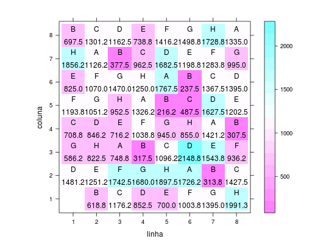
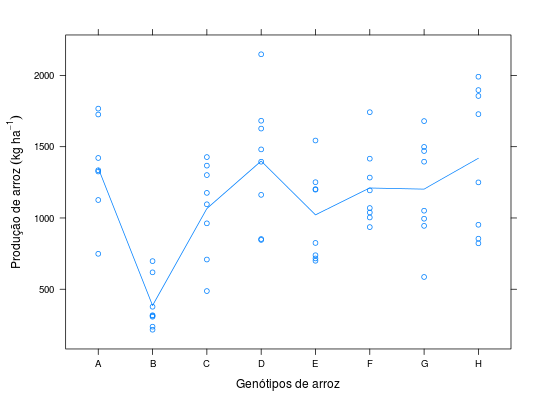

Experimento em delineamento quadrado latino cujo objetivo foi medir a resposta em produtividade de um grupo de oito genótipos de arroz ao ataque inicial de pragas.
Um data.frame com 64 observações e 4 variáveis
ZIMMERMANN (2004), Tabela 5.2, pág. 92.
library(lattice) library(reshape) data(ZimmermannTb5.2)#> Warning: data set ‘ZimmermannTb5.2’ not foundstr(ZimmermannTb5.2)#> 'data.frame': 63 obs. of 4 variables: #> $ linha : Factor w/ 8 levels "1","2","3","4",..: 2 3 4 5 6 7 8 1 2 3 ... #> $ coluna: Factor w/ 8 levels "1","2","3","4",..: 1 1 1 1 1 1 1 2 2 2 ... #> $ geno : Factor w/ 8 levels "A","B","C","D",..: 2 3 4 5 6 7 8 4 5 6 ... #> $ prod : num 619 1176 852 700 1004 ...cast(ZimmermannTb5.2, linha ~ coluna, value = "geno")#> linha 1 2 3 4 5 6 7 8 #> 1 1 <NA> D G C F E H B #> 2 2 B E H D G F A C #> 3 3 C F A E H G B D #> 4 4 D G B F A H C E #> 5 5 E H C G B A D F #> 6 6 F A D H C B E G #> 7 7 G B E A D C F H #> 8 8 H C F B E D G Acast(ZimmermannTb5.2, linha ~ coluna, value = "prod")#> linha 1 2 3 4 5 6 7 8 #> 1 1 NA 1481.25 586.25 708.75 1193.75 825.0 1856.25 697.50 #> 2 2 618.75 1251.25 822.50 846.25 1051.25 1070.0 1126.25 1301.25 #> 3 3 1176.25 1742.50 748.75 716.25 952.50 1470.0 377.50 1162.50 #> 4 4 852.50 1680.00 317.50 1038.75 1326.25 1250.0 962.50 738.75 #> 5 5 700.00 1897.50 1096.25 945.00 216.25 1767.5 1682.50 1416.25 #> 6 6 1003.75 1726.25 2148.75 855.00 487.50 237.5 1198.75 1498.75 #> 7 7 1395.00 313.75 1543.75 1421.25 1627.50 1367.5 1283.75 1728.75 #> 8 8 1991.30 1427.50 936.25 307.50 1202.50 1395.0 995.00 1335.00levelplot(prod ~ linha + coluna, data = ZimmermannTb5.2, aspect = "iso", panel = function(x, y, z, subscripts, ...) { panel.levelplot(x, y, z, subscripts = subscripts) panel.text(x, y, ZimmermannTb5.2$geno[subscripts], pos = 3) panel.text(x, y, sprintf("%0.1f", z), pos = 1) })xyplot(prod ~ geno, data = ZimmermannTb5.2, type = c("p", "a"), xlab = "Genótipos de arroz", ylab = expression("Produção de arroz"~(kg~ha^{-1})))